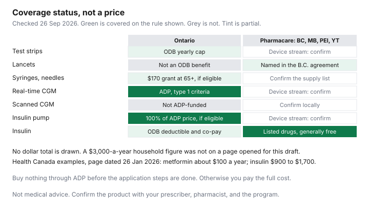

Healthcare · Canada
Cutting Diabetes Supply Costs in Canada: Test Strips, CGMs, Pumps and What Public Plans Cover
Diabetes supplies are not one bill. Test strips, lancets, pen needles, a sensor, and a pump are different programs, and a province that pays for insulin may not pay for the sensor. This page maps the public rules that were on a government page on 26 Sep 2026. It does not rank meters, sensors, or pumps, and it does not tell you which product to use. That is a prescriber’s decision. Health Canada’s pharmacare overview, page details 26 January 2026, gives separate examples instead: metformin about $100 a year, insulin between $900 and $1,700 a year, and sulfonylureas and SGLT-2 inhibitors from $100 to over $1,000 a year. Those are examples of drug cost, not a quote for your pharmacy, and they are not a sum you should add to a sensor. Confirm every product with your prescriber and pharmacist, and confirm the tax treatment with the CRA.
Key takeaways
- Ontario Drug Benefit covers blood-glucose test strips up to a yearly maximum that depends on treatment: 3,000 with insulin, 400 with higher-risk medication, 200 with lower-risk medication or diet alone. Lancets, glucometers, and syringes are not an Ontario Drug Benefit benefit.
- The Assistive Devices Program can pay 100 percent of its price for an insulin pump, up to $2,400 a year for pump supplies in $600 payments every three months, and the full cost of an eligible real-time continuous glucose monitor, for type 1 diabetes that meets the medical criteria. Buy before the application is finished and you pay the whole invoice.
- The same program does not fund intermittently scanned continuous glucose monitoring. Seniors 65 and older who need insulin every day and live at home can apply for $170 a year for syringes and needles.
- National pharmacare drug coverage, generally free at the counter regardless of age, income, or private insurance, is in place as agreements with British Columbia, Manitoba, Prince Edward Island, and Yukon. Delivery fees and pharmacist prescribing fees are not covered. Device funding is a separate stream.
- People with type 1 diabetes meet the disability tax credit’s life-sustaining therapy criteria on the CRA page for 2021 and later years, and the practitioner no longer has to detail the therapy hours. You still have to meet the four criteria the page lists. Type 2 diabetes is not given that shortcut on the page. This is not a determination.
Monthly cost map: strips, lancets, pen needles, CGM sensors and pumps
A monthly map without prices is the honest one. No pharmacy flyer opened for this draft printed a current Ontario price for a box of strips, a lancet drum, a pen needle, a sensor, or a pump. Inventing those prices would make the chart look precise and be false. Use the categories as a checklist of who pays, then write your own prices from the receipt.
Strips are the category Ontario Drug Benefit will touch, inside a cap. Lancets are called out on the same page as not covered by that program. Pen needles and syringes for a senior who uses insulin every day and lives at home are a separate $170 annual grant, not a per-box benefit. A real-time sensor system is an Assistive Devices Program device, with sensors and transmitters up to a maximum quantity in a 24-month period. An intermittently scanned sensor is outside that program. A pump is another application, with its own supplies grant. Insulin itself is a drug: Ontario Drug Benefit rules if you are in that program, or the pharmacare list if you live in one of the four jurisdictions that signed. The workplace drug-coverage guide is where prior authorization and a formulary fight belong. This page does not replay them.
Health Canada’s examples are the only annual drug figures used here. They are not shelf prices. Metformin at about $100 a year and insulin at $900 to $1,700 a year can both be wrong for a specific DIN, a specific dose, and a specific pharmacy fee. Use them as a reason to look up the DIN, not as a budget line.
Provincial coverage: Ontario ADP pumps and ODB strips, CGM coverage by province (verify at draft)
Ontario Drug Benefit covers diabetic testing strips up to a maximum number a year. The table on the coverage page is the rule. People using insulin: 3,000 strips. People using medication with a higher risk of hypoglycemia: 400. People using medication with a lower risk of hypoglycemia: 200. Diet and lifestyle only, with no insulin and no medication: 200. A higher amount needs a reason from a physician or nurse practitioner. The page says syringes, lancets, glucometers, and other diabetic supplies are not covered by the Ontario Drug Benefit. It points to the Assistive Devices Program, Ontario Works, the Ontario Disability Support Program, and Diabetes Canada. It also points to the Ontario Monitoring for Health Program for testing supplies. That program’s dollar amount was not on the page opened here, so it is not printed.
The Assistive Devices Program page for diabetes equipment, updated 15 September 2026, is limited to type 1 diabetes that meets the medical criteria. It pays 100 percent of the program’s price for an insulin pump. It pays up to $2,400 a year for supplies used with the pump, in $600 instalments every three months, the first of them within 30 days of approval if you are approved. It provides full coverage for a real-time glucose monitoring system, and full coverage for the sensors and transmitters up to a maximum quantity per 24-month period. Income is not considered. You do not qualify if the Workplace Safety and Insurance Board or Veterans Affairs, for a Group A veteran, is already funding the same equipment. The steps are an assessment at an ADP-registered Diabetes Education Program, a choice of device from a registered business, the application, and electronic submission by that business. The program aims to review an application within eight weeks. If you order or buy the pump or the real-time system before those steps are done, you pay the full cost. Pump supplies are renewed every year. Real-time monitor supplies are renewed every two years. A replacement pump is possible if your condition changed and the pump no longer meets your needs, or if the pump is worn out, out of its five-year warranty, and cannot be repaired at a reasonable cost. A lost pump is not replaced. The policy manual for real-time systems, the file dated 5 August 2025 on ontario.ca, says the program does not provide coverage for intermittently scanned continuous glucose monitoring or the related supplies. That is the Ontario answer to “does the province cover my sensor?” It depends which kind, and on the type 1 criteria. A type 2 sensor was not described as funded on the public page opened here.
Seniors are a narrower grant. If you are 65 or older, need insulin every day, and live at home, you can apply for $170 a year for syringes and needles. The business does not have to be registered with the program. If approved, the $170 is sent within 30 days. Renew every two years. This grant is not the pump-supply grant, and it is not a sensor.
Other provinces were not given a yes or no for sensors on this page, because a national grid of “covered” would have required a page for each province that was not opened in full. Diabetes Canada’s old provincial-coverage address returned a page-not-found when it was opened on 26 Sep 2026. The association’s comparisons report is the place to start a province check, and the ministry page is the place to finish it. Do not treat a charity chart as the approval letter. British Columbia’s pharmacare agreement, below, is the one out-of-Ontario device list that was actually in a signed text.
National pharmacare's diabetes coverage and device fund (BC, MB, PEI, YT)
Health Canada’s “who’s covered” page, page details 24 April 2026, says you generally qualify if you live in a province or territory with an agreement, you are eligible for that province’s or territory’s public health insurance, and you have a valid prescription and any authorization the product needs. Coverage does not depend on age, income, or private or workplace insurance. If you are on a federal public drug plan, you keep that federal coverage. The agreements listed are British Columbia, Manitoba, Prince Edward Island, and Yukon. If your province is not on that list, the page tells you to contact your ministry. Ontario is not on that list. An Ontario resident does not get this federal counter price by travelling to a phrase in a headline.
The “what’s covered” page, also dated 24 April 2026, says pharmacare covers a range of birth control options and diabetes medications, including the dispensing fee, and does not cover delivery fees or pharmacist prescribing fees. The about page, dated 26 January 2026, says the four agreements make a range of contraception and diabetes medications free at the pharmacy counter, so you do not coordinate those products with a private plan. Private and public plans still cover products outside the lists. The same page says the agreements also help with supplies used to administer medication, such as pumps and syringes, and supplies used to monitor, such as glucose monitors and test strips. “Help with access” is not the same sentence as “free at the counter.” Drugs are described as generally free. Devices are described as improved access. Read the provincial list before you assume a sensor is in the drug bucket.
The bilateral agreements set implementation dates for the drug coverage. British Columbia’s implementation date is 1 March 2026. Manitoba’s is 15 April 2025. Prince Edward Island’s is 1 May 2025. Yukon’s agreement sets the implementation date between 15 April and 5 May 2026, with written confirmation to Canada, rather than one public day in the clause opened here. Each agreement also has a device-and-supplies stream. British Columbia’s text says that stream is to support hybrid closed-loop blood glucose monitor and insulin delivery systems, to include lancets for diabetic use, and to include additional supplies for insulin pump and glucose monitor users, using existing coverage plans and adjudication rules. That is why lancets are marked as named in the B.C. agreement on the chart, and why other device cells say confirm. The agreements run, unless ended sooner, to 31 March 2029. That end date is the contract horizon in the text, not a promise that coverage stops that morning. Confirm the live list on the provincial site the “who’s covered” page links.
Pharmacy price shopping and manufacturer patient programs
Where a public plan pays the drug and you pay a co-payment, the way to lower the year’s co-payments is fewer fills of a larger supply, not a tour of every banner. Ontario Drug Benefit lets you request a three-month supply of some chronic drugs, including diabetes drugs. The co-payment is then paid less often. Ask which of your DINs qualify. A three-month fill that the plan will not accept becomes a cash problem, so ask before you ask the pharmacy to order it.
Where you pay cash, the dispensing fee and the drug cost are both negotiable in the sense that two pharmacies can print two totals. This page did not open a fee survey, so it does not name a cheap pharmacy. Take the DIN, not the brand story, and ask two pharmacies for the total of drug cost plus fee for the quantity you will actually pick up. A lower fee on a short fill can lose to a slightly higher fee on a fill that matches the prescription. Manufacturer patient-support programs exist for some DINs. Ask the pharmacist whether the DIN you were prescribed has one, and ask the prescriber before you switch products to chase a program. This page does not name a program or a product. A program that requires a specific brand can fight an Ontario Drug Benefit rule that pays the interchangeable generic. That fight belongs with the prescriber and the pharmacist, not with a coupon you found first.
If a workplace plan is still in force, bill it in the order the booklet requires before you pay cash and hope for a refund. Coordination of two plans is the two-plan guide. A spouse’s plan can be the one that pays a sensor the provincial program will not. Do not drop that plan in the month you also change a pump.
Disability Tax Credit and medical expense credit for diabetes costs
The disability tax credit is a non-refundable credit for a severe and prolonged impairment. It is not a rebate for test strips, and a diagnosis by itself is not the approval. The CRA’s life-sustaining therapy page says people with type 1 diabetes meet the eligibility criteria under life-sustaining therapy, and that medical practitioners no longer have to provide details of the therapy for 2021 and later years. The same page says you must meet all four criteria. The therapy is needed to support a vital function, and insulin therapy is one of the examples. It is needed at least two times a week. It is needed for an average of at least 14 hours a week, taking time away from everyday activities. The impairment has lasted, or is expected to last, at least 12 months. Time that counts toward the 14 hours includes adjusting and administering medication, a log, setting up equipment, and certain dietary work tied to the therapy. Time that does not count includes exercise, obtaining medication, ordinary travel, and the time a pump or other device takes to deliver the therapy. The page’s own insulin-pump example says the time the pump takes to administer insulin is not counted, and that monitoring, tubing, sites, calibration, ketone testing, and the log can count. An older video note on the page says the type 1 criteria in that video are outdated and apply only to 2020 and earlier. Use the checklist, not the video. If you are not sure, the page says you can still apply and the CRA decides from what the practitioner sends. As of 14 July, the credit’s main page says applications go by the digital form or by mail, not through “submit documents” in a CRA account. The year on that “14 July” line did not include a year on the page opened here. Read the notice before you upload a form to the wrong place.
Type 2 diabetes is not given the type 1 sentence. Do not file as if it were. If therapy hours and the other tests are a question, that question goes to the practitioner and the CRA, not to a blog checklist.
The medical expense credit is a different line. You claim the part of an eligible expense that was not, and will not be, reimbursed, unless the reimbursement is included in income. The CRA list marks many devices and therapies as eligible only with a prescription, a written certification, or Form T2201. Insulin, strips, and needles are not given a dollar cap on this page because the line-by-line detail for each supply was not copied into a single figure. Look the item up on the CRA medical-expense list before you claim it. The household map of credits, including the threshold structure, is the tax-credits guide. This page does not repeat a threshold it did not re-read as a 2026 indexed amount. An expense a workplace plan already paid is not claimed again. Keep the pharmacy receipt that shows the amount you paid, the DIN, and the date.
Planning for benefit maximums and retirement
A workplace plan’s annual maximum for diabetic supplies is a calendar, not a suggestion. If the maximum resets on 1 January, a sensor order in December that could wait until January consumes a year that is about to expire. If it resets on the hire anniversary, write that date down. The gap-insurance guide is the place to decide whether an individual plan replaces a maximum. It is often a poor trade when the provincial program already pays the pump and the real-time system, and a better trade when you are paying a scanned sensor in cash. Run the arithmetic on your receipts, not on a national average.
Retirement changes the drug plan more than it changes the Assistive Devices Program. The device program is not an age-65 benefit. The drug plan might be. In Ontario, the Ontario Drug Benefit starts on the first day of the month after you turn 65, with a deductible and co-payment unless the Seniors Co-Payment Program applies. That handoff, and the mistake of cancelling a retiree plan before the start date, is on the turning-65 guide. Strip caps still apply after 65. The $170 syringe grant starts only if you are 65 or older, need insulin daily, and live at home. A move into long-term care changes the drug co-payment again. The Ontario drug-coverage page says someone in a long-term care home or a community home for opportunity pays up to $2 a fill, and that the co-payment is zero in a long-term care home where the page says it is zero, with no deductible. Read that rule before you assume the senior deductible continues inside a home.
Put four dates on one card: the pump-supply anniversary, the two-year real-time renewal, the two-year syringe renewal if it applies, and the drug-plan year. Missing a renewal does not pause your diabetes. It pauses the funding. The program’s own instruction is to contact the registered business before the real-time funding period expires so the renewal is filed in time.
| Item | Ontario | National pharmacare (BC, MB, PEI, YT) | Other provinces | Tax relief |
|---|---|---|---|---|
| Test strips | Ontario Drug Benefit yearly maximum: 3,000, 400, or 200, by treatment. A higher amount needs a prescriber’s reason. | Named as monitoring supplies the agreements help you access. Not described as the same “free at the counter” rule as listed drugs. Confirm the provincial list. | Open the ministry page. A national yes was not verified. | Unreimbursed eligible amounts only. Confirm the item on the CRA list. |
| Lancets | Not covered by the Ontario Drug Benefit. The page lists lancets with the supplies that program does not pay. | British Columbia’s agreement names lancets in the device stream. Manitoba, Prince Edward Island, and Yukon: confirm. | Not verified here. | Confirm on the CRA list. Do not assume a lancet is a drug. |
| Pen needles and syringes | $170 a year through the Assistive Devices Program if you are 65 or older, need insulin every day, and live at home. Not an Ontario Drug Benefit benefit. | The overview mentions syringes among supplies the agreements help you access. Confirm. | Not verified here. | Confirm on the CRA list for the amount you paid. |
| Real-time CGM | Full Assistive Devices Program coverage, including sensors and transmitters up to the quantity limit per 24 months, for type 1 diabetes that meets the criteria. Apply before you buy. | Device stream, not the drug list. Confirm. | Not verified here. | Confirm. A device the program already paid is not claimed again. |
| Intermittently scanned CGM | Not funded by the Assistive Devices Program. The real-time policy manual says so. | Not named as a distinct funded product in the pages opened. Confirm. | Not verified here. | If you pay cash, confirm whether that device is an eligible medical expense. |
| Insulin pump | 100 percent of the Assistive Devices Program price if you have type 1 diabetes and meet the criteria, plus up to $2,400 a year for supplies. Five-year warranty is part of the replacement rule. | Pumps are named as supplies the agreements help you access. British Columbia names hybrid closed-loop systems in the device stream. Confirm. | Not verified here. | The amount you pay above any grant is the only amount that could be a medical expense. Confirm. |
| Insulin | Ontario Drug Benefit rules: deductible and co-payment, unless another category or the Seniors Co-Payment Program applies. Biosimilar transition rules have applied to some insulins. Ask the pharmacist. | Listed diabetes drugs are generally free at the counter, including the dispensing fee, in the four jurisdictions. Prescribing fees and delivery fees are extra. | Your ministry’s formulary. Not copied here. | Unreimbursed eligible drug cost. The disability tax credit is a separate application, not a receipt. |

Sources & date stamps
- Ontario, Get coverage for prescription drugs. Strip maximums 3,000, 400, and 200. Lancets, glucometers, and syringes not covered by the Ontario Drug Benefit. Updated 18 August 2026. Opened 26 Sep 2026.
- Ontario, Diabetes equipment and supplies, updated 15 September 2026. Pump at 100 percent of the program price, $2,400 supplies, real-time monitor, $170 syringe grant for eligible seniors.
- Ontario Assistive Devices Program policy manual for real-time continuous glucose monitoring systems, file dated 5 August 2025. Intermittently scanned systems are not covered.
- Health Canada, Who’s covered under national pharmacare, page details 24 April 2026. British Columbia, Manitoba, Prince Edward Island, Yukon. Age, income, and private insurance do not decide eligibility.
- Health Canada, What’s covered, page details 24 April 2026. Dispensing fee included. Delivery fees and prescribing fees excluded.
- Health Canada, About national pharmacare, page details 26 January 2026. Metformin about $100 a year, insulin $900 to $1,700, sulfonylureas and SGLT-2 inhibitors $100 to over $1,000.
- Bilateral agreements: British Columbia implementation 1 March 2026, device stream including lancets and hybrid closed-loop systems. Manitoba 15 April 2025. Prince Edward Island 1 May 2025. Yukon between 15 April and 5 May 2026. Agreement horizon 31 March 2029 unless ended sooner.
- CRA, Disability tax credit overview, and Life-sustaining therapy eligibility. Type 1 diabetes statement for 2021 and later years. Four criteria, including 14 hours a week. Opened 26 Sep 2026.
- CRA, lines 33099 and 33199, eligible medical expenses. Unreimbursed amounts only. Opened 26 Sep 2026.
- Diabetes.ca provincial-coverage address opened 26 Sep 2026 returned a page-not-found. No charity price was used.
Frequently asked questions
Does Ontario cover continuous glucose monitors?
Ontario’s Assistive Devices Program provides full coverage for a real-time continuous glucose monitoring system, including sensors and transmitters up to a quantity limit per 24 months, if you have type 1 diabetes and meet the medical criteria. The program’s policy manual says it does not cover intermittently scanned systems. You must finish the application before you buy, or you pay the full cost. A type 2 monitor was not described as funded on the public page opened for this guide.
What does national pharmacare cover for diabetes?
In British Columbia, Manitoba, Prince Edward Island, and Yukon, listed diabetes medications are generally free at the pharmacy counter, including the dispensing fee, regardless of age, income, or private insurance. Delivery fees and pharmacist prescribing fees are not covered. Devices and supplies are a separate stream in the agreements, not the same rule as the drug list. Ontario is not one of the four jurisdictions on the who’s-covered page dated 24 April 2026.
Can diabetes supplies be claimed on taxes?
You can claim the unreimbursed part of an eligible medical expense. A supply a public plan or a workplace plan already paid is not claimed again, unless that reimbursement is included in your income. Look the item up on the CRA list before you claim it, because some devices need a prescription or another form. This is not a filing position.
Could I qualify for the Disability Tax Credit with diabetes?
The CRA page says people with type 1 diabetes meet the life-sustaining therapy criteria, and that practitioners no longer have to detail the therapy for 2021 and later years. You still have to meet all four criteria on that page, including therapy that averages at least 14 hours a week, and the CRA decides the application. Type 2 diabetes is not given that type 1 sentence. Do not treat this paragraph as an approval.
How can I lower strip and sensor costs?
Use the Ontario Drug Benefit strip cap that matches your treatment, and ask for a three-month fill when the drug qualifies so the co-payment comes less often. For a real-time monitor or a pump, finish the Assistive Devices Program application before you buy. Seniors 65 and older who need insulin every day and live at home can apply for the $170 grant for syringes and needles. Compare pharmacies on the DIN you were prescribed, and do not switch products only to chase a manufacturer program.